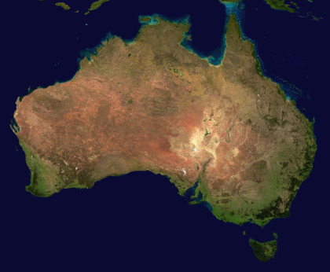
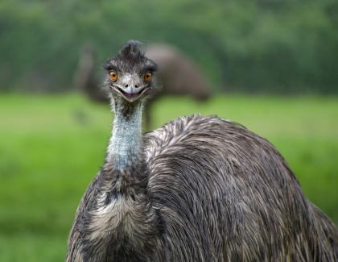
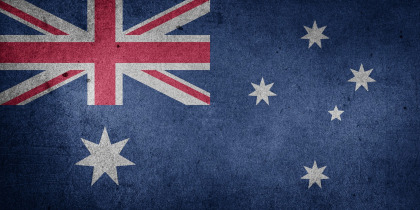

Terra Australis Incognita
Считается, что первые люди добрались до Австралии около 50 тысяч лет назад – самые ранние морские путешественники в мире. В те времена остров Новая Гвинея на севере и Тасмания на юге были частью континента. Самая ранняя археологическая находка останков человека в Австралии – это так называемый человек Мунго, который жил примерно 40 тысяч лет назад. По ней ученые определили, что первые жители Австралии были массивными и высокими людьми. В доисторический период Австралия заселялась людьми за несколько волн. Около 5 тысяч лет назад с очередным потоком переселенцев на материке появилась собака динго – единственный не сумчатый австралийский хищник. Современный облик австралийские аборигены приобрели приблизительно ко 2 тысячелетию до нашей эры, эволюционируя и смешиваясь с новоприбывшими переселенцами.
Аборигены формировали разнообразные племена с собственными языками, культурой, религией и традицией. К моменту открытия Австралии европейцами, на материке проживало около 500 племен, говоривших на примерно 250 разных языках. При этом, ни у кого из них не было письменности. Только символические рисунки и устные преданиях сохраняли древние легенды.
Открытие континента

Официально считается, что Австралию открыл голландский мореплаватель Виллем Янсзон в 1606 году. Он доплыл до залива Карпентария на севере материка и высадился на полуострове Кейп-Йорке – самой северной точке Австралии, которая находится всего в 160 километрах от Новой Гвинеи. За год до него в этих водах плавал испанец Луис Ваэс Торрес, который прошел совсем недалеко от австралийского побережья и даже предположительно видел землю на горизонте, но принял ее за очередной архипелаг.
Существует еще несколько альтернативных теорий открытия Австралии. По одной из них, до Виллема Янсзона материк обнаружили португальские мореплаватели. Флотилия под руководством де Сикейры исследовала путь до Молуккских островов и отправляла несколько экспедиций вокруг архипелага. Одна из таких экспедиций под командованием Мендонсы в 1522 году предположительно посетила северо-западные берега Австралии. Тем не менее, материк оставался неизвестным в Европе вплоть до плаваний голландцев.
Янсзон дал название Новая Голландия найденным территориям и объявил их владением Нидерландов. В 1616 году западное побережье посетил Дерк Хартог, через три года Фредерик де Хаутман исследовал несколько сотен километров побережья. В 1644 году Абел Тасман начал знаменитые морские походы, во время которых открыл Новую Зеландию, Тасманию, Фиджи и Тонга, а также доказал, что Австралия – отдельный континент. Голландцы изучали только западное побережье Австралии, вся остальная береговая линия и внутренние земли оставались неисследованными вплоть до плаваний Джеймса Кука.
Освоение новых земель
В середине 18 века британцам пришла в голову идея ссылать осужденных на острова Южного океана или на предположительно существующий материк Terra Australis Incognita. В 1769 году английский лейтенант Джеймс Кук отправился на корабле Индевор на Таити с секретным заданием найти Южный материк и исследовать берега Новой Голландии. Кук приплыл к восточному побережью Австралии и высадился в бухте Ботани. Исследовав прибрежные земли, он сделал вывод, что они достаточно благоприятны для основания колонии.
Во время второй кругосветной экспедиции Кук исследовал южные широты и пришел к выводу, что в них не существует никаких крупных земель кроме Австралии. Мечты о Terra Australis были разрушены, зато оставалось свободное название. В 1814 году английский мореплаватель Мэтью Флиндерс предложил назвать Новую Голландию Австралией. К тому времени на материке уже существовали колонии из нескольких штатов, которые не сразу приняли предложение, но со временем стали употреблять это название. В 1824 году оно стало официальным. Кук рекомендовал для поселения бухту Ботани. Сюда в 1787 году и отправился первый флот с поселенцами. Это были
каторжники – в большинстве своем бывшие торговцы и фермеры, осужденные на небольшой срок за незначительные преступления. Многим из них вскоре дали помилование и выделили участки для ферм. Остальными переселенцами были пехотинцы с семьями, офицеры и другие служащие.
Корабли нашли недалеко от бухты Ботани удобное место для колонизации – залив Порт-Джэксон, где основали поселение в бухте Сидней-Коув. Дата создания колонии – 26 января 1788 года – позже стала национальным праздником, Днем Австралии. Спустя месяц губернатор поселения официально объявил о создании колонии, которую назвали Новым Южным Уэльсом. Населенный пункт стал называться в честь британского министра внутренних дел виконта Сидней. Так появился город Сидней – сейчас самый крупный и развитый в Австралии.